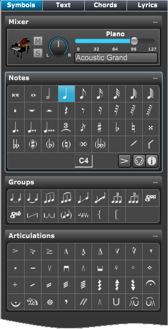

Tools Panel - Symbols
Tools Panel - Symbols
If Tools Panel is not showing click on the Score Tools button at top left and then click on the Symbols section in the header if it's not active.
You can also type "Ctrl (Cmd)-Shift-S" to go directly to the Symbols section.

|
Mixer - A quick way to change the track's MIDI settings.
- Mute/Solo - Enable/Disable mute or solo playback of this track.
- Pan - Set tracks MIDI pan value to be sent to playback device.
- Volume Slider -Send MIDI volume to playback device.
- MIDI Patch - This button lets you choose the current MIDI program for this track.
Palettes - A set of palettes containing the symbols you enter in your score:
- Notes - Standard notation symbols
- Groups - Groups notes together,
- Articulations - Affects playback of note's timing.
- Ornaments - Affects playback of note's pitch.
- Dynamics - Controls playback volume
- Bar Lines - Changes barline types including repeats.
- Clefs - Insert a clef change in middle of score.
- Graphics - Adds graphic symbols to your score.
- Note Heads - Changes a note head type.
- Guitar - Adds guitar markings.
- Jazz - Some typical jazz symbols.
- Drums - Adds percussion markings.
|
To insert a symbol:
- To open a palette, double click on it's title bar or click on the open icon at top right.
- Click on the desired symbol to select it.
- Click in the score at the location to enter the symbol.
Note: For most symbols, if you hold the mouse after clicking, you can drag the symbol to a different location.
Also, some symbols, like hairpins allow you to drag the symbol's end position.
- Finally you can double click on some symbols to change it's settings.
For more information Entering symbols or Entering notes.
To enter notes using Step Input see Using Step Input.